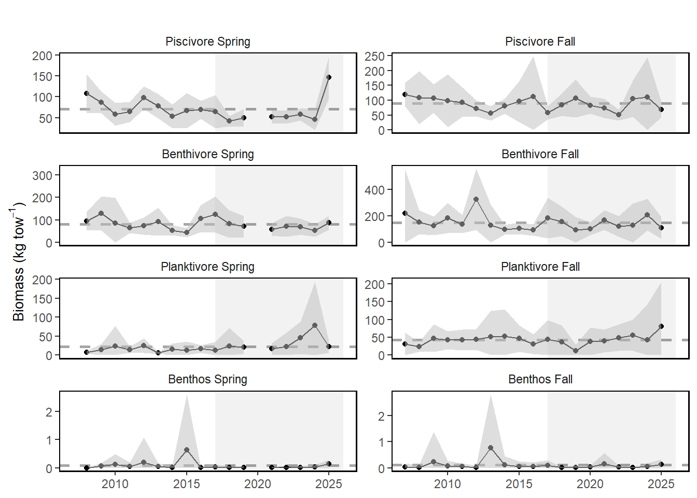

12 Inshore Survey (Mid Atlantic)
Last updated July 23, 2026
Description: Biomass time series for aggregate species groups from the NEAMAP inshore bottom trawl surveys conducted from Cape Hatteras to Rhode Island.
Contributor(s): James Gartland, Matt Camisa, Rebecca Peters, Sean Lucey
Affiliations: VIMS, Maine
Indicator Family:
Indicator Category:
Synthesis Theme:
12.1 Introduction to Indicator
Indicators from these inshore surveys are analogous to those produced by the NEFSC trawl survey in the aggregate survey biomass indicator dataset.
12.2 Key Results and Visualizations
Each survey shows trends by aggregate group.
Mid-Atlantic

New England
#> NULL12.3 Implications
The trends in the NEAMAP inshore survey vary compared to the NEFSC survey. This is driven by different species availability to surveys in time and space as well as the surveys sampling different habitats. Nearshore habitats are important to fish and fisheries so we monitor them as as well as trends from the larger EPUs.
12.4 Indicator statistics
Spatial scale: Nearshore regions of the MAB
Temporal scale: Spring and Fall
Variable definitions
12.5 Get the data
Point of contact: James Gartland (NEAMAP), jgartlan@vims.edu; Rebecca Peters (ME/NH survey), rebecca.j.peters@maine.gov
ecodata dataset: ecodata::mab_inshore_survey
Tech Doc link: https://noaa-edab.github.io/tech-doc/mab_inshore_survey.html